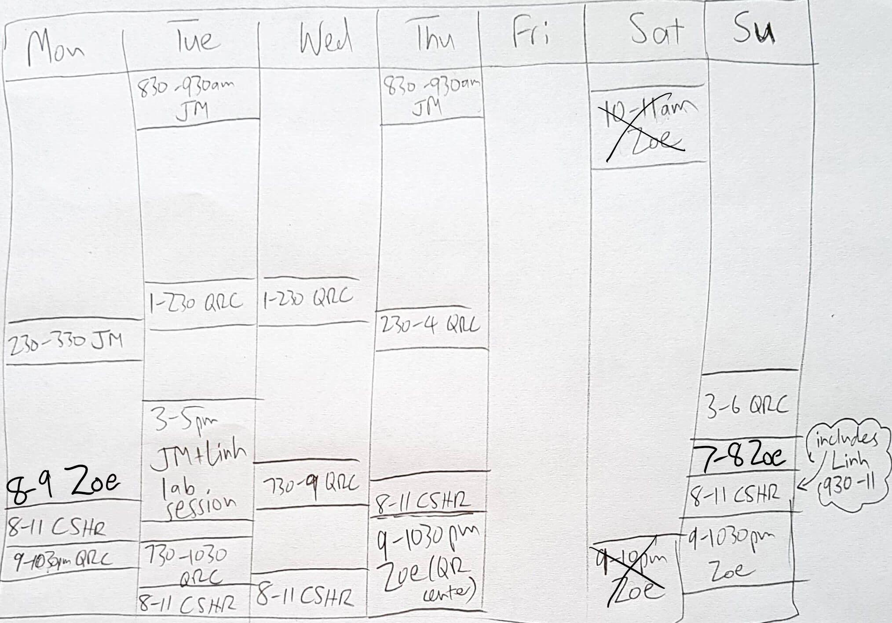

Support from Teaching Assistant (TA), Quantitative Reasoning Associate (QRA), Quantitative Reasoning Center, and Computer Science Help Room
If you have a problem with homework, a lab, or any class material, remember to post your question on our Moodle Discussion forum. Other members of the class may be able to help you.
We are fortunate to have both a Quantitative Reasoning Associate
(QRA) and a Teaching Assistant (TA) supporting us in this course. In
addition, Dickinson's Quantitative Reasoning Center and the
departmental Computer Science Help Room are available to assist
students. Details are as follows.
- Teaching Assistant: Our TA is Linh Nguyen
(nguyenlh@dickinson.edu). Linh will assist during lab sessions,
typically Tuesdays 3-5pm. Linh will also be available in the
Computer Science Help Room on Sunday evenings, 9:30-11:00pm. (See
below for more information on the CS Help Room.)
- Quantitative Reasoning Associate: Our QRA is Zoe Yin
(yinz@dickinson.edu). Zoe will be holding QRA office hour sessions
on Sundays at 7-8pm and Mondays 8-9pm, via Zoom. The Zoom meeting
details are available on Moodle. Zoe will also be working as a
tutor in the Quantitative Reasoning Center, 9:00-10:30pm Thursdays
and Sundays. See below for instructions on signing up for these
sessions.
- Quantitative Reasoning Center: Dickinson College provides
additional support for students taking courses with quantitative
content across the curriculum through
the Quantitative
Reasoning (QR) Center. For the fall 2020 semester, the QR Center
will offer remote tutoring for COMP132 in addition to general
quantitative support. It is strongly recommended to make an
appointment, as follows:
- Please use WCONLINE to make an appointment.
- Access the drop-down menu under "limit to" at the top of the scheduler and select COMP132. This will restrict the tutor list and schedule to only those tutors approved for this course.
- When you make your appointment, please also paste or upload your assignment and any work that you have done.
- Computer Science Help Room: The computer science program
runs a Help Room staffed by TAs in the evenings, from Sunday to
Thursday, 8-11 PM, beginning on the Sunday after the first week of
classes. Details of how to access the Help Room remotely are available on Moodle.
The following table attempts to summarize all of the above, and
adds in the instructor's office hours. In this table, "QRC" means
there is a QR Center tutor qualified for COMP132 scheduled; "CSHR" means Computer Science Help Room, and "JM" means the instructor's office hours.

Back
to John MacCormick's
homepage